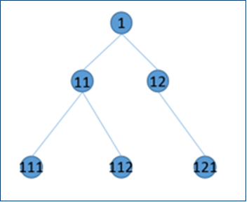
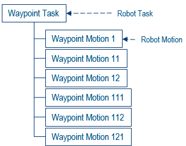
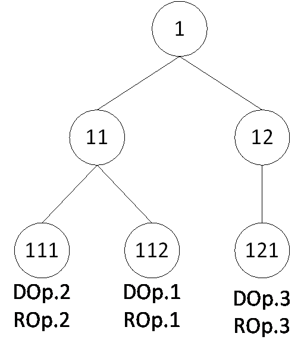

Integrating Drilling and Riveting into your Translator |
| Use Case |
AbstractThis document describes the necessary steps to customize an existing translator so it can translate drill and rivet instructions and their associated profiles during both program upload and download. |
You should have read Robotics Programming Overview, Customizing a Translator and Translating an Instruction.
You can import a working version of the customized translator from the file
InstallRootFolder [1] is the folder where the
API CD-ROM is installed. Additionally, this folder contains a sample XML program
to upload.

A series of joint or cartesian target locations that define collision free paths the robot can move between. A robot can always move from the parent to a child waypoint and visa-versa. Each parent waypoint target can have multiple possible children to move to. Each process point defines, at least, a waypoint target that it can move to on a collision free path. The hierarchical structure forms an inverted Tree structure with the Root of the Tree having no parent. Each waypoint target must have a WaypointID and a ParentWaypointID assigned. Optionally, the waypoint can have an escape motion type defined.A robot motion that contains a waypoint target.
A sequence instruction containing a series Waypoint motions generated using an assigned Waypoint Task as a reference. In a Drill/Rivet robot task only one Waypoint Task can be assigned as a reference for its contained Waypoint Operations. The assignment just needs to happen once, in any of the Waypoint Operations instantiated within the Drill/Rivet task.

A task containing only waypoint motions. A waypoint task cannot contain any other type of instruction. Conceptually, a waypoint task can be seen as the reference task that solely defines the hierarchical structure and positional data of waypoint motions. A waypoint task is used as a reference when creating a drill/rivet task, serving as the source of positional data for any waypoint operations instantiated within the drill/rivet task.In waypoint task image, Waypoint 1 (Root) is the parent of Waypoint 11 and 12. Waypoint 11 is the parent of Waypoint 111 and Waypoint 112 and Waypoint 12 is the parent of Waypoint 121.
An object containing manufacturing positions for the design fasteners/entities (3D points). This object is persisted in the logical behavior Representation and aggregated to Manufacturing cell in the Resource tree. Manufacturing Fastener is used downstream to generate robot tasks.
Manufacturing Pattern – An object used to group Manufacturing Fasteners. This object is persisted in the logical behavior Representation along with Manufacturing Fasteners and aggregated to Manufacturing cell in the Resource tree. Manufacturing Pattern is used downstream to generate robot tasks.
A Robot instruction for drilling/riveting a point. Depending on the content of associated Drill/Rivet Profile, Drill/Rivet Operation would perform different intermediate motions (like Approach, Drill/Rivet Start, Drill/Rivet, Drill/Rivet Complete, Retract) to emulate Drilling/Riveting. Each Drill/Rivet Operation in a Drill/Rivet Task is assigned a parent waypoint, which is used to approach and depart from the operation.

Let us consider a Drill/Rivet task with 4 Drill Operations (DOp.1- ROp.3) and 2 Rivet Operations (ROp.1 and ROp.2). Let us assign Waypoint 111 as parent waypoint of Drill Operation DOp.1 and Rivet Operation ROP.1, Waypoint 112 as parent waypoint of Drill Operation DOp.2 and Rivet Operation ROp.2 and Waypoint 121 as parent waypoint of Drill Operations DOp.3 and ROp.3.Let’s define the order of execution as follows: DOp.1, ROp.1, DOp.2, ROp.2, DOp.3 and finally ROp.3. These are the steps the robot will take to accomplish this:
To customize the translator, we will follow the steps described in Customizing a Translator:
To create a waypoint task, we will create a regular robot task and define the waypoint tree structure within by creating Waypoint Motion instructions. A Waypoint Task is just that, a task that contains only waypoint motions. Thus, no special customization is needed on the way the XML translator translates tasks – at least for Waypoint Tasks.
Creating a waypoint motion is not any different from creating any other instruction type, except that they can only be instantiated within a Waypoint Task. Use the CreateInstruction interface on an OlpInstructions object, and pass in the instruction type – delOlpWaypointMotion. Waypoint motion instructions can only be created in a Waypoint Task or under a waypoint Operation. The returned instruction is actually of type OlpRobotMotion, and the main key difference from a regular OlpRobotMotion is that the waypoint motion target implements OlpWaypointMotionTarget. Thus, we will have to customize the class used to translate Robot Motions (XMLMotionInstruction) in order to translate Waypoint Motions.
To create them, use the CreateInstruction interface on an OlpInstructions object, and pass in the instruction type – delOlpWaypointOperation. The returned object of type OlpWaypointOperation contains an Instructions member where we will create the desired waypoint motions. When uploading a waypoint operation, we must set its reference waypoint task. Keep in mind that, when instantiating Waypoint Motion instructions within a Waypoint Operation that has a Waypoint Task set, the only requirement for a fully defined waypoint motion is its waypoint ID. Any additional information set will be overwriting the information stored in the Waypoint Task, so please plan accordingly. As far as our custom translator goes and, since this is a new instruction that did not exist before, we will add a new class that derives from the base Instruction class to translate it.
Creating drill, rivet and drill-rivet operations follows a slightly different approach from what we are accustomed to. This type of operations need to be instantiated from a OlpTemplate. To do so, we will use the CreateInstructionFromTemplate method on the task’s OlpInstructions object with the following parameters:
libraryName = “DrillRivet” templateName = “DrillAction” or “DrillRivetAction” or “RivetAction” TemplateType = “Spot” subtype = “Action” RelInstruction is the relative OlpInstruction where to create this action After is a Boolean value indicating whether to create the instruction before or after the relative instruction
We must keep in mind that the return object from this function call is an OlpTemplate, but we can also use the OlpDrillRivetAction interface to access further properties of this object. The returned object’s instructions will contain the drill and/or rivet operations for us to set data on.
The instructions within the returned OlpTemplate will vary depending on whether we created a Drill, Rivet or a DrillRivet operation. When creating a drill or a rivet action we get a list with a single instruction, as opposed to a DrillRivet action where two instructions are contained. Use the OlpRobotMotion to modify or access the action’s data.
Drill, Rivet and Drill-Rivet actions must have an associated DrillRivet profile for their definition to be complete. To translate DrillRivet profiles within our custom XML translator, we will derive the XMLController class to add a DrillRivet profile translation method. When instantiating a new DrillRivet profile, we will get a profile that contains slightly different objects depending on the process type we assign it during creation.
Since we are adding instructions to the translation set, we will have to customize the logic governing the translation process: XMLInstructionList. Additionally, to aid in our translation of waypoint operations, we will need a customized XMLTask.
For the sake of clarity, we will store our Keywords in a separate class from XMLKeywords.
| Class | Base Class | Purpose of customization |
|---|---|---|
| XMLControllerCustom | XMLController | Translate Drill-Rivet profiles |
| XMLDrillRivetOperationBaseInstruction | XMLMotionInstructionCustom | Translate Drill and Rivet operations |
| XMLDrillRivetOperationInstruction | XMLInstruction | Coordinate Drill-Rivet operation upload/download |
| XMLInstructionListCustom | XMLInstructionList | Control translation logic |
| XMLKeywordsCustom | XMLKeywords | Storage of keywords |
| XMLMotionInstructionCustom | XMLMotionInstruction | Translate waypoint instructions |
| XMLTaskCustom | XMLTask | Aid in WaypointOperation translation |
| XMLTranslatorCustom | XMLTranslator | Set translator options, fix waypoint operations without waypoint task. |
| XMLWaypointMotionInstruction | XMLMotionInstructionCustom | Translate WaypointMotions |
| XMLWaypointOperationInstruction | XMLInstruction | Translate WaypointOperations |
Note: Have a look at the sample XML program to get a deeper insight into any of the structures outlined below.
Their structure is contained within the Controller element, and is quite simple.
<DrillProfileList> </DrillProfile> Properties </DrillProfile> </DrillProfileList> <DrillRivetProfileList> <DrillRivetProfile> Properties </DrillRivetProfile> </DrillProfileList>
The Waypoint Motion XML structure is identical to that of a Robot Motion.
<Instruction> </PersistentParameters> <ApplicativeParameters> </MotionAttributes> </Target> </ApplicativeParameters> </Instruction>
The Waypoint Operation structure is quite simple, as it mainly just serves as a Waypoint Motion container. We can identify a waypoint operation by its LateType, which takes a value of DNBWaypointOperationActivity. The link to the Waypoint Task is stored within the PersistentParameters element.
<Instruction> </PersistentParameters> </WaypointOperationInstructions> </Instruction>
The DrillRivet Motion XML structure is identical to that of a Robot Motion. We can identify them by the use of DNBDrillOperationActivity, DNBDrillRivetOperationActivity and DNBRivetOperationActivity.
<Instruction> </PersistentParameters> <ApplicativeParameters> </MotionAttributes> </Target> </ApplicativeParameters> </Instruction>
We recommend creating your own copy of the macro library for your customizations. This way it is clear whether you are using the DELMIA standard translator or your custom version. Also, as soon as you save a change to a macro library, it is updated in the database so other users in your enterprise will get your changes.
Please import the provided XMLCAADrillRivet translator to get details on writing the classes.
We will update the TranslatorFactory class to return the appropriate instruction class when instantiating XMLController, XMLMotionInstruction, XMLInstructionList and XMLTask objects. For the newly added classes, we will create new factory methods. Please refer to the provided XMLCAADrillRivet translator for more details.
The XML translator supports both V5 and V6 upload and downloads. There is no upload option so there is nothing for us to update there. However, the translator does provide a V5 and a V6 download option. In our case, since we have defined this custom XML structure in a V6-typed XML, we will set the valid download options to “V6”, thus dropping “V5” from the supported formats for download.
| Version: 1 [Jun 2020] | Document created |